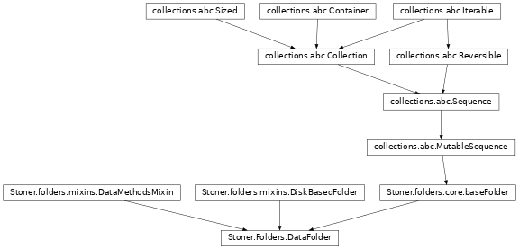

Stoner.DataFolder¶
-
class
Stoner.DataFolder(*args, **kargs)[source]¶ Provide an interface to manipulating lots of data files stored within a directory structure on disc.
By default, the members of the DataFolder are isntances of
Stoner.Data. The DataFolder emplys a lazy open strategy, so that files are only read in from disc when actually needed.Methods
__init__(*args, **kargs)Initialize self.
add_group(key)Add a new group to the current baseFolder with the given key.
all()Iterates over all the files in the Folder and all it’s sub Folders recursively.
append(value)Append an item to the folder object
clear()Clear the subgroups.
compress([base, key, keep_terminal])Compresses all empty groups from the root up until the first non-empty group is located.
concatenate([sort, reverse])Concatentates all the files in a objectFolder into a single metadataObject like object.
count(name)Provide a count method like a sequence.
extend(values)S.extend(iterable) – extend sequence by appending elements from the iterable
extract(*metadata, **kargs)Walks through the terminal group and gets the listed metadata from each file and constructsa replacement metadataObject.
fetch()Preload the contents of the DiskbasedFolder.
file(name, value[, create, pathsplit])Recursively add groups in order to put the named value into a virtual tree of
baseFolder.filter([filter, invert, copy])Filter the current set of files by some criterion
filterout(filter[, copy])Synonym for self.filter(filter,invert=True)
flatten([depth])Compresses all the groups and sub-groups iunto a single flat file list.
gather([xcol, ycol])Collects xy and y columns from the subfiles in the final group in the tree and builds iunto a
Stoner.Core.metadataObjectget(name[, default])Return either a sub-group or named object from this folder.
getlist(**kargs)Scans the current directory, optionally recursively to build a list of filenames
group(key)Take the files and sort them into a series of separate objectFolder objects according to the value of the key
index(name[, start, end])Provide an index method like a sequence.
insert(ix, value)Implements the insert method with the option to append as well.
items()Return the key,value pairs for the subbroups of this folder.
Filter out earlier revisions of files with the same name.
keys()Return the keys used to access the sub-=groups of this folder.
make_name([value])Construct a name from the value object if possible.
next()Python 2.7 style iterator function.
on_load_process(tmp)Carry out processing on a newly loaded file to set means and extra metadata.
pop([name, default])Return and remove either a subgroup or named object from this folder.
popitem()Return the most recent subgroup from this folder.
prune([name])Remove any empty groups from the objectFolder (and subgroups).
remove(value)S.remove(value) – remove first occurrence of value.
reverse()S.reverse() – reverse IN PLACE
save([root])Save the entire data folder out to disc using the groups as a directory tree, calling the save method for each file in turn.
select(*args, **kargs)A generator that can be used to select particular data files from the objectFolder
setdefault(k[, d])Return or set a subgroup or named object.
slice_metadata(key[, output])Return an array of the metadata values for each item/file in the top level group
sort([key, reverse])Sort the files by some key
Takes a file list an unflattens them according to the file paths.
unload([name])Removes the instance from memory without losing the name in the Folder.
update(other)Update this folder with a dictionary or another folder.
values()Return the sub-groups of this folder.
walk_groups(walker, **kargs)Walks through a heirarchy of groups and calls walker for each file.
zip_groups(groups)Return a list of tuples of metadataObjects drawn from the specified groups
Attributes
basenamesReturns a list of just the filename parts of the objectFolder.
cloneClone just does a deepcopy as a property for compatibility with
Stoner.Core.DataFile.debugJust read the local debug value.
defaultsBuild a single list of all of our defaults by iterating over the __mro__, caching the result.
depthGives the maximum number of levels of group below the current objectFolder.
directoryJust alias directory to root now.
eachReturn a
Stoner.folders.each.itemproxy object for calling attributes of the member type of the folder.filesReturn an iterator of potentially unloaded named objects.
groupsSubfolders are held in an ordered dictionary of groups.
instanceA default instance of the type of object in the folder.
is_emptyReturn True if the folder is empty.
keyOverride the parent class key to use the directory attribute.
loadedAn iterator that indicates wether the contents of the
Stoner.Folders.objectFolderhas been loaded into memory.loaderReturn a callable that will load the files on demand.
lsList just the names of the objects in the folder.
lsgrpReturns a list of the groups as a generator.
metadataReturns a
Stoner.folders.metadata.combined_metadata_pryxobject for operations on combined metadata.mindepthGives the minimum number of levels of group below the current objectFolder.
not_emptyAn iterator for objectFolder that checks whether the loaded metadataObject objects have any data.
not_loadedReturn an array of True/False for whether we’ve loaded a metadataObject yet.
objectsThe objects in the folder are stored in a
regexpDict.patternProvide support for getting the pattern attribute.
rootReturn the real folder root.
shapeReturn a data structure that is characteristic of the objectFolder’s shape.
trunkdepthThe number of levels of group before a group with files is found.
typeDefines the (sub)class of the
Stoner.Core.metadataObjectinstances.